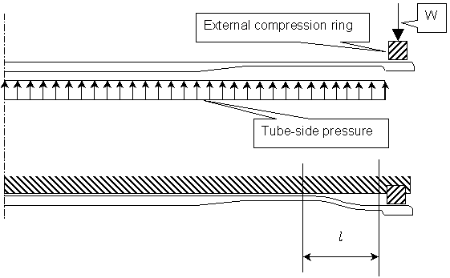
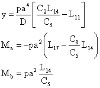
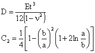
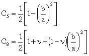
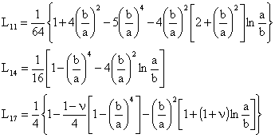
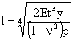
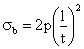

L’azione attraverso il diaframma sulla guarnizione della piastra tubiera (internal push screws) o sulla guarnizione della cassa (external push screws, vedi carico W nella figura) richiede di esecitare una forza che, oltre a comprimere adeguatamente la guarnizione, vinca la resistenza del diaframma e soprattutto l’effetto di fondo della pressione interna esercitato sull’area anulare di larghezza l rappresentata in figura. A sua volta l è una funzione di:
· pressione interna p
· spessore t del diaframma elastico
· spostamento assiale y dell’anello di compressione rispetto alla posizione di riposo
Una soluzione sufficientemente accurata del problema sopra esposto è data dal caso 2f della tabella 24 di Roark, Formulas for stress and strain.
Detti a e b i raggi esterno ed interno della fascia anulare di larghezza l, si ha:

con:



La ricerca del valore di l=a-b in funzione di y può essere fatta quindi per tentativi iterando sul valore di b nelle precedenti espressioni.
Qualora ci si accontenti di una soluzione meno accurata, o nel caso in cui l sia piccolo rispetto ad a, si può utlizzare l’espressione seguente:

cui corrisponde la seguente espressione per la tensione di flessione massima nel diaframma:

Normalmente questa tensione assume valori molto elevati e ben superiori al limite elastico: essa sarà assoggettata unicamente a limiti connessi con il rischio di rottura a fatica.